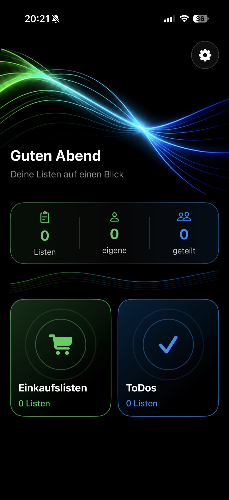
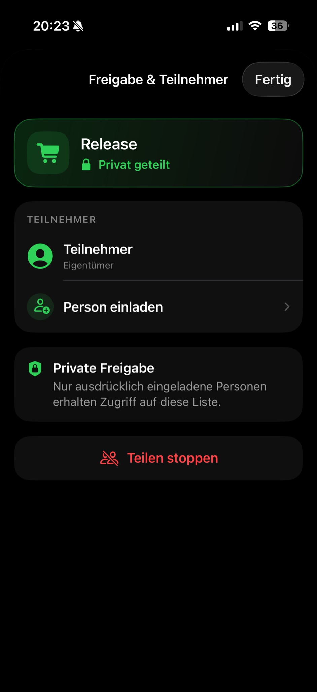

Einkaufslisten & ToDos
Erstelle übersichtliche Listen für Einkäufe, Aufgaben und gemeinsame Pläne.
GEMEINSAM EINFACH ERLEDIGEN
Erstelle Einkaufslisten und ToDos, teile sie mit Familie, Freunden oder deinem Partner und bearbeitet sie gemeinsam.
EINFACH UND GEMEINSAM
Ob Wocheneinkauf, Urlaubsplanung oder gemeinsame Aufgaben – Einträge lassen sich hinzufügen, abhaken oder löschen und bleiben über iCloud aktuell.
Erstelle übersichtliche Listen für Einkäufe, Aufgaben und gemeinsame Pläne.
Nur ausdrücklich eingeladene Personen erhalten Zugriff – ohne öffentliche Listenlinks.
Gemeinsame Änderungen werden mit CloudKit auf allen beteiligten Geräten aktuell gehalten.
Öffne und verwende ClearList direkt in deinen Unterhaltungen.
SO SIEHT CLEARLIST AUS
ClearList konzentriert sich auf das Wesentliche: schnell eine Liste erstellen, gemeinsam bearbeiten und erledigen.

